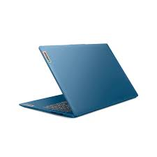
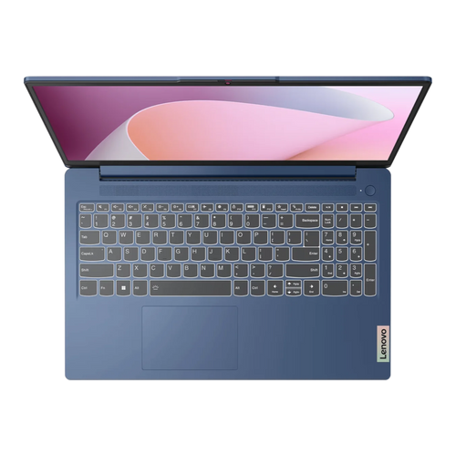
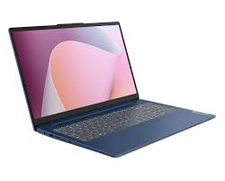

Potencia de Última Generación
Impulsada por la arquitectura de los procesadores AMD Ryzen™ serie 7000, esta laptop ofrece un
rendimiento excepcional tanto en tareas de productividad como en flujos de trabajo de desarrollo de
software. Gracias a su gestión térmica inteligente, el sistema mantiene temperaturas óptimas bajo
carga, asegurando una experiencia fluida al ejecutar múltiples aplicaciones, máquinas virtuales o
compiladores de código sin sacrificar la autonomía de la batería.

Calidad Visual y Confort Ocular
La pantalla de 15.6 pulgadas con resolución Full HD maximiza el área de trabajo gracias a sus marcos
ultradelgados. Diseñada con tecnología antirreflejo y certificación de baja emisión de luz azul,
reduce la fatiga ocular durante jornadas prolongadas de estudio o trabajo. La calidad del panel
garantiza colores nítidos y ángulos de visión amplios, ideales tanto para el diseño de interfaces
(UX/UI) como para el consumo de contenido multimedia de alta definición.

Resistencia y Versatilidad
Construida para resistir el ritmo del día a día, la Ideapad Slim 3 cuenta con una robustez de grado
militar (MIL-STD-810H), lo que la protege contra golpes, caídas y condiciones extremas. En cuanto a
conectividad, integra puertos USB-C de función completa para transferencia de datos y carga, salida
HDMI para monitores externos y una cámara web con obturador de privacidad físico, combinando
seguridad y versatilidad en un chasis ligero y elegante.